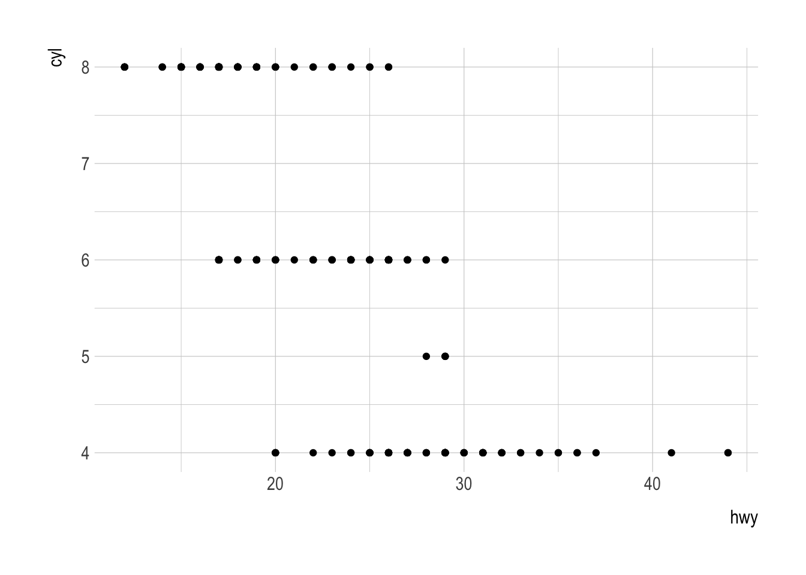
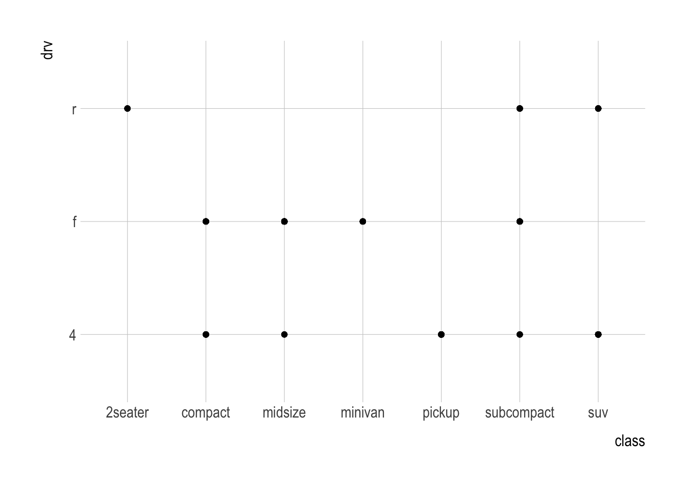
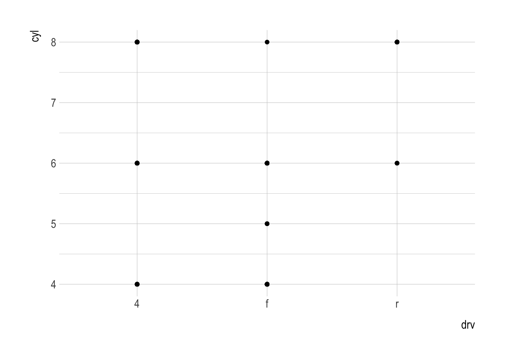

library(tidyverse)
mpg <- ggplot2::mpgClasswork 4
ggplot Basics
Question 1. First Steps
Load the following data.frame, mpg.
datatable(mpg)library(skimr)
skim(mpg)| Name | mpg |
| Number of rows | 234 |
| Number of columns | 11 |
| _______________________ | |
| Column type frequency: | |
| character | 6 |
| numeric | 5 |
| ________________________ | |
| Group variables | None |
Variable type: character
| skim_variable | n_missing | complete_rate | min | max | empty | n_unique | whitespace |
|---|---|---|---|---|---|---|---|
| manufacturer | 0 | 1 | 4 | 10 | 0 | 15 | 0 |
| model | 0 | 1 | 2 | 22 | 0 | 38 | 0 |
| trans | 0 | 1 | 8 | 10 | 0 | 10 | 0 |
| drv | 0 | 1 | 1 | 1 | 0 | 3 | 0 |
| fl | 0 | 1 | 1 | 1 | 0 | 5 | 0 |
| class | 0 | 1 | 3 | 10 | 0 | 7 | 0 |
Variable type: numeric
| skim_variable | n_missing | complete_rate | mean | sd | p0 | p25 | p50 | p75 | p100 | hist |
|---|---|---|---|---|---|---|---|---|---|---|
| displ | 0 | 1 | 3.47 | 1.29 | 1.6 | 2.4 | 3.3 | 4.6 | 7 | ▇▆▆▃▁ |
| year | 0 | 1 | 2003.50 | 4.51 | 1999.0 | 1999.0 | 2003.5 | 2008.0 | 2008 | ▇▁▁▁▇ |
| cyl | 0 | 1 | 5.89 | 1.61 | 4.0 | 4.0 | 6.0 | 8.0 | 8 | ▇▁▇▁▇ |
| cty | 0 | 1 | 16.86 | 4.26 | 9.0 | 14.0 | 17.0 | 19.0 | 35 | ▆▇▃▁▁ |
| hwy | 0 | 1 | 23.44 | 5.95 | 12.0 | 18.0 | 24.0 | 27.0 | 44 | ▅▅▇▁▁ |
Q1a.
Run ggplot(data = mpg). What do you see?
ggplot(data = mpg)
Q1b.
Write a ggplot code to make a scatterplot of hwy vs. cyl.
ggplot(data = mpg) +
geom_point(mapping = aes(x = hwy, y = cyl))
Q1c.
- What happens if you make a scatterplot of
classvs.drv?- Why is the plot not useful?
ggplot(data = mpg) +
geom_point(mapping = aes(x = class, y = drv))
Question 2. Aethetic Mapping
Q2a.
- Which variables in
mpgare categorical? - Which variables are continuous?
Q2b.
- Map a continuous variable to
color,size, andshape. - How do these aesthetics behave differently for categorical vs. continuous variables?
Q2d.
What happens if you map an aesthetic to something other than a variable name, like aes(color = displ < 5)?
Question 3. Facets
Q3a.
What happens if you facet on a continuous variable?
Q3b.
- What do the empty cells in the scatterplot of
displvs.hwywithfacet_grid(drv ~ cyl)mean?- How do they relate to this plot?
ggplot(data = mpg) +
geom_point(mapping = aes(x = drv, y = cyl))
Q3c.
What plots does the following code make? What does . do?
ggplot(data = mpg) +
geom_point(mapping = aes(x = displ, y = hwy),
alpha = .5) +
facet_grid(drv ~ .)
ggplot(data = mpg) +
geom_point(mapping = aes(x = displ, y = hwy),
alpha = .5) +
facet_grid(drv ~ .)
ggplot(data = mpg) +
geom_point(mapping = aes(x = displ, y = hwy),
alpha = .5) +
facet_grid(. ~ cyl)Q3d.
Consider the following faceted plot:
ggplot(data = mpg) +
geom_point(mapping = aes(x = displ, y = hwy),
alpha = .5) +
facet_wrap(~ class, nrow = 2)- What are the advantages to using faceting instead of the color aesthetic?
- What are the disadvantages?
- How might the balance change if you had a larger dataset?
Q3e.
- Read
?facet_wrap.- What does
nrowdo? - What does
ncoldo? - What other options control the layout of the individual panels?
- Why doesn’t
facet_grid()havenrowandncolarguments?
- What does
Q3f.
When using facet_grid(), you should usually put the variable with more unique levels in the columns. Why?
Q3g.
Use the following data.frame.
tvshows_web <- read_csv(
'https://bcdanl.github.io/data/tvshows.csv')datatable(tvshows_web)Describe the relationship between audience size (
GRP) and audience engagement (PE) usingggplot.Explain the relationship in words.